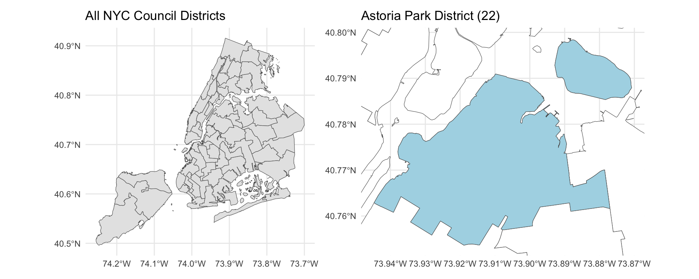
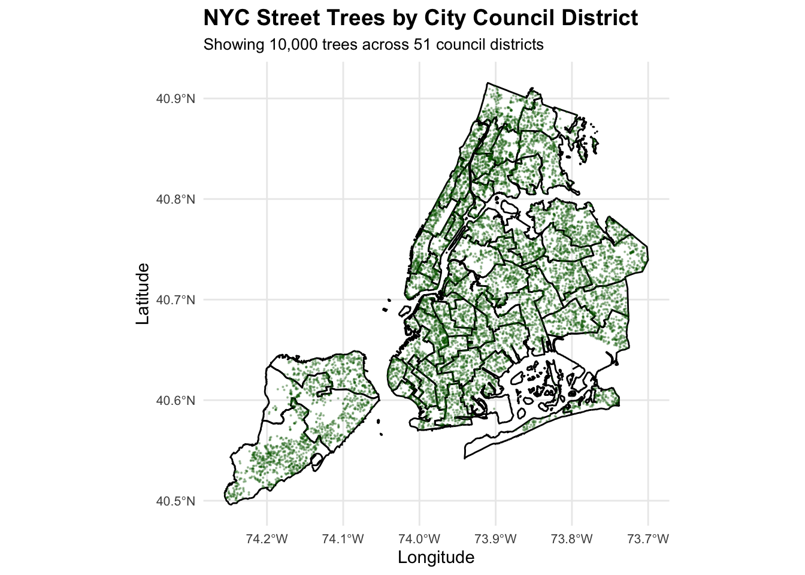

Hello! Today we are going to look at trees in NYC, along with districts that divide the city. Click on the code chunks below to expand or collapse code if you’re following along. Use the navigation bar on the right to navigate through the analysis and policy brief.
Before we get started, let’s take a look at the data import. Click the code fold below to see how we are downloading the data from the NYC Department of City Planning website. We want to be mindful and download only as needed. The function below creates a directory if it doesn’t already exist and saves our geospatial data to it. From here we can use this data any way we want.
Download NYC Districts
# a helper function to download the nyc city council district boundary data# downloads the file if you do not already have it, unzips it, and loads it as an sf objectlibrary(sf)download_city_council_data <-function() { dir_path <-"data/mp03" zip_path <-file.path(dir_path, "nycc.zip") unzip_dir <-file.path(dir_path, "nycc")# create the directory if it does not exist yetif (!dir.exists(dir_path)) {dir.create(dir_path, recursive =TRUE) }# url for the city council boundary dataset url <-"https://s-media.nyc.gov/agencies/dcp/assets/files/zip/data-tools/bytes/city-council/nycc_25c.zip"# download the data only if it has not already been downloadedif (!file.exists(zip_path)) {download.file(url, destfile = zip_path, mode ="wb") }# unzip the dataset, but only when necessaryif (!dir.exists(unzip_dir)) {unzip(zip_path, exdir = unzip_dir) }# specify the path to the shapefile (this may differ depending on how your directories are organized) path_to_shp <-"data/mp03/nycc/nycc_25c/nycc.shp"# read the shapefile nyc_council <-st_read(path_to_shp, quiet =TRUE)# transform the coordinate system to wgs84 for consistency nyc_council <-st_transform(nyc_council, crs ="WGS84")# return the sf objectreturn(nyc_council)plot(st_geometry(nyc_council))}nyc_districts <-download_city_council_data()
How does this dataset look like? It’s a series of coordinates for each district
Show table
library(DT)library(sf)## this shows the datapull in a more presentable table nyc_districts <-download_city_council_data()# drop geometry for cleaner displaynyc_districts %>%st_drop_geometry() %>%datatable(options =list(pageLength =10, scrollX =TRUE),caption ="NYC Council Districts" )
Let’s take a look at the districts in NYC and specifically the Astoria Park district near the water
Astoria Park map
# a helper function to download the nyc city council district boundary data# downloads the file if you do not already have it, unzips it, and loads it as an sf objectlibrary(sf)download_city_council_data <-function() { dir_path <-"data/mp03" zip_path <-file.path(dir_path, "nycc.zip") unzip_dir <-file.path(dir_path, "nycc")# create the directory if it does not exist yetif (!dir.exists(dir_path)) {dir.create(dir_path, recursive =TRUE) }# url for the city council boundary dataset url <-"https://s-media.nyc.gov/agencies/dcp/assets/files/zip/data-tools/bytes/city-council/nycc_25c.zip"# download the data only if it has not already been downloadedif (!file.exists(zip_path)) {download.file(url, destfile = zip_path, mode ="wb") }# unzip the dataset, but only when necessaryif (!dir.exists(unzip_dir)) {unzip(zip_path, exdir = unzip_dir) }# specify the path to the shapefile (this may differ depending on how your directories are organized) path_to_shp <-"data/mp03/nycc/nycc_25c/nycc.shp"# read the shapefile nyc_council <-st_read(path_to_shp, quiet =TRUE)# transform the coordinate system to wgs84 for consistency nyc_council <-st_transform(nyc_council, crs ="WGS84")# return the sf objectreturn(nyc_council)plot(st_geometry(nyc_council))}nyc_districts <-download_city_council_data()library(ggplot2)# load patchwork or install it if neededif (!require("patchwork", quietly =TRUE)) {install.packages("patchwork")library(patchwork)}# plot showing every city council districtp1 <-ggplot(nyc_districts) +geom_sf() +theme_minimal() +labs(title ="All NYC Council Districts")# subset for the astoria park district (district 22)astoria_district <- nyc_districts[nyc_districts$CounDist ==22, ]# zoomed-in view focused on astoria park areap2 <-ggplot(nyc_districts) +geom_sf(fill ="white") +geom_sf(data = astoria_district, fill ="lightblue") +coord_sf(xlim =st_bbox(astoria_district)[c("xmin", "xmax")],ylim =st_bbox(astoria_district)[c("ymin", "ymax")]) +theme_minimal() +labs(title ="Astoria Park District (22)")# place both plots next to each otherp1 + p2

The following block of code downloads Tree Points data from NYC OpenData, depicting coordinates of trees planted across the city. This is a massive dataset, so we will call around 50,000 rows each time and combine the results into one final dataframe. The following code checks if a directory exists and if it does, is there already a datafile downloaded there? If yes, open the file, if no create a directory and download the file from NYC OpenData.
Function to download NYC Trees Data
# a helper function to download the nyc city trees coordinates data# downloads the file if you do not already have it, unzips it, and loads it as an sf objectlibrary(sf)download_nyc_tree_points <-function() {# load required librarieslibrary(httr2)library(sf)library(dplyr)# set up file paths for data storage data_dir <-"data/mp03" output_file <-file.path(data_dir, "nyc_trees_complete.geojson")# if the file already exists, load it instead of downloading everything againif (file.exists(output_file)) {message("Found existing file: ", output_file)message("Loading data from file.") all_trees <-st_read(output_file, quiet =TRUE)return(all_trees) }# begin fresh download if no previous file is foundmessage("File not found. Downloading from source")# make the data directory if it is not already presentif (!dir.exists(data_dir)) {message("Creating directory: ", data_dir)dir.create(data_dir, recursive =TRUE) }# base endpoint for the nyc tree census (in geojson format) base_url <-"https://data.cityofnewyork.us/resource/hn5i-inap.geojson"# settings for the api limit <-50000# how many rows to request per call offset <-0# where to start retrieving data page <-1# simple counter for progress messages# store each page of data before merging all_data <-list()# build the request with httr2 response <-request(base_url) |>req_url_query(`$limit`= limit, `$offset`= offset) |>req_user_agent("R httr2 (Educational Project)") |>req_retry(max_tries =3) |>req_perform()# capture the geojson response geojson_text <-resp_body_string(response)# parse it directly into an sf object temp_data <-st_read(geojson_text, quiet =TRUE) n_records <-nrow(temp_data)# store this chunk all_data[[page]] <- temp_data# stop once we have reached a final partial pageif (n_records < limit) {break }# short pause to avoid overwhelming the serverSys.sleep(0.5)# move to the next block of records offset <- offset + limit page <- page +1# merge the list of sf objects into one all_trees <-bind_rows(all_data)# write the complete dataset to diskst_write(all_trees, output_file, delete_dsn =TRUE, quiet =TRUE)return(all_trees)}# call functionnyc_trees <-download_nyc_tree_points()
Mapping NYC Trees
Now let’s look at a subset of the trees data, plotted over NYC districts. For this, we will limit to 10,000 trees only.
Plot trees over districts
# function to create a map of nyc trees over council districts## parameters:# districts: sf object containing city council district boundaries# trees: sf object containing nyc street tree locations# sample_size: optional number of trees to plot ## returns: a ggplot object representing the full mapplot_nyc_trees <-function(districts, trees, sample_size =NULL) {library(ggplot2)library(dplyr)# sometimes plotting every tree can be too much computational work# so this lets you grab a smaller random subset when you just want a quick previewif (!is.null(sample_size) && sample_size <nrow(trees)) {message("Sampling ", format(sample_size, big.mark =",")," trees from ", format(nrow(trees), big.mark =","), " total") trees_to_plot <- trees |>slice_sample(n = sample_size) } else {# otherwise just go for the full dataset trees_to_plot <- treesmessage("Plotting all ", format(nrow(trees), big.mark =","), " trees") }# build the map object p <-ggplot() +# first layer: council district shapes so we can see boundaries clearlygeom_sf(data = districts,fill =NA, # let the background show throughcolor ="black", # outlines for the districtslinewidth =0.5) +# a thin border so it is still readable# second layer: the actual tree points (this is the heavy layer)geom_sf(data = trees_to_plot,color ="darkgreen", # trees feel very green so we keep thisalpha =0.3, # add transparency so dense areas do not get too opaquesize =0.1) +# tiny dots since there are *so many* trees# general styling to keep things clean and map-liketheme_minimal() +theme(axis.text =element_text(size =8), # keep axis labels subtleplot.title =element_text(size =14, face ="bold"),plot.subtitle =element_text(size =10) ) +# text labels to explain what the viewer is looking atlabs(title ="NYC Street Trees by City Council District",subtitle =sprintf("Showing %s trees across 51 council districts",format(nrow(trees_to_plot), big.mark =",")),x ="Longitude",y ="Latitude" )return(p)}#call function and plotplot_nyc_trees(nyc_districts, nyc_trees, sample_size =10000)

Let’s see what this looks like when you plot the entire trees data!
Below is an analysis of district level trees, combining our trees datapoints with NYC districts. We’ll use a helper function and set up one main function to join our data. Each exploratory analysis question uses its own function.
Setup function for EDA
library(sf)library(dplyr)library(ggplot2)# helper function to build a point geometry from lat/lonnew_st_point <-function(lat, lon, ...) {st_sfc(st_point(c(lon, lat))) |>st_set_crs("WGS84") # make sure the coord system is set right away}# add a borough label based on the council district rangesadd_borough_column <-function(data) { data |>mutate(borough =case_when( CounDist >=1& CounDist <=10~"Manhattan", CounDist >=11& CounDist <=18~"Bronx", CounDist >=19& CounDist <=32~"Queens", CounDist >=33& CounDist <=48~"Brooklyn", CounDist >=49& CounDist <=51~"Staten Island",TRUE~"Unknown"# fallback in case the data has weird surprises ) )}# spatial join that attaches each tree point to the council district it falls injoin_trees_to_districts <-function(trees, districts) {message("performing spatial join of trees to districts...")message("this can take a while if your dataset is huge, so hang tight...")# spatial join: check which polygon each point sits inside trees_with_districts <-st_join(trees, districts, join = st_intersects)message("join complete. matched ", format(nrow(trees_with_districts), big.mark =","), " trees to districts")# tag the borough so later summaries are easier to run trees_with_districts <-add_borough_column(trees_with_districts)return(trees_with_districts)}#call functiontrees_with_districts <-join_trees_to_districts(nyc_trees, nyc_districts)
Which council district has the most trees? This would be District 51 with 70,965 trees
Most trees
library(sf)library(dplyr)library(DT)# function to figure out which district has the most treesfind_district_most_trees <-function(trees_with_districts) {# count up trees for each district trees_per_district <- trees_with_districts |>st_drop_geometry() |># drop the spatial stuff, we just need countsgroup_by(CounDist) |>summarise(tree_count =n(),.groups ="drop" ) |>arrange(desc(tree_count)) # sort from most to least trees# grab the top district most_trees_district <- trees_per_district |>slice(1)# return both the winner and the full rankingsreturn(list(result = most_trees_district,all_districts = trees_per_district ))}# run the functionmost_trees <-find_district_most_trees(trees_with_districts)# make a nice table showing the top 10 districtsmost_trees$all_districts |>slice(1:10) |>mutate(Rank =row_number(),District = CounDist,`Tree Count`=format(tree_count, big.mark =",") # add commas for readability ) |>select(Rank, District, `Tree Count`) |>datatable(rownames =FALSE,options =list(pageLength =10,dom ='t', # just show the table, no search box or anythingordering =FALSE ),caption ="Top 10 Districts by Tree Count" )
Which council district has the highest density of trees? District 7 has the highest tree density with 0.0002835 trees per square unit
Density of trees
library(sf)library(dplyr)library(DT)# function to find which district has the highest tree densityfind_district_highest_density <-function(trees_with_districts) {# calculate tree density for each district tree_density <- trees_with_districts |>st_drop_geometry() |># drop spatial data, just need the numbersgroup_by(CounDist, Shape_Area) |>summarise(tree_count =n(),.groups ="drop" ) |>mutate(tree_density = tree_count / Shape_Area # trees per unit area ) |>arrange(desc(tree_density)) # sort by highest density first# grab the district with the highest density highest_density_district <- tree_density |>slice(1)# return both the top district and all the density rankingsreturn(list(result = highest_density_district,all_densities = tree_density ))}# run the functionmost_dense <-find_district_highest_density(trees_with_districts)# create a table showing the top 10 densest districtsmost_dense$all_densities |>slice(1:10) |>mutate(Rank =row_number(),District = CounDist,`Tree Count`=format(tree_count, big.mark =","), # add commas`Tree Density`=format(tree_density, scientific =FALSE, digits =6) # show as decimal not scientific notation ) |>select(Rank, District, `Tree Count`, `Tree Density`) |>datatable(rownames =FALSE,options =list(pageLength =10,dom ='t', # just the table, no extrasordering =FALSE ),caption ="Top 10 Districts by Tree Density" )
3.Which district has highest fraction of dead trees out of all trees? District 32 has the highest fraction of dead trees at 14.3 %
Show code
library(sf)library(dplyr)library(DT)# function to find which district has the highest fraction of dead treesfind_district_highest_dead_fraction <-function(trees_with_districts) {# calculate the fraction of dead/retired trees per district dead_tree_fraction <- trees_with_districts |>st_drop_geometry() |># drop spatial stuffgroup_by(CounDist) |>summarise(total_trees =n(),dead_trees =sum(tpcondition =="Dead"| tpcondition =="Retired", na.rm =TRUE), # count dead or retired trees.groups ="drop" ) |>mutate(dead_fraction = dead_trees / total_trees # what percentage are dead ) |>arrange(desc(dead_fraction)) # sort by highest dead fraction first# grab the district with the most dead trees proportionally highest_dead_district <- dead_tree_fraction |>slice(1)# return the top district and all the datareturn(list(result = highest_dead_district,all_fractions = dead_tree_fraction ))}# run the functionmost_dead_trees <-find_district_highest_dead_fraction(trees_with_districts)# make a table showing the top 10 districts by dead tree fractionmost_dead_trees$all_fractions |>slice(1:10) |>mutate(Rank =row_number(),District = CounDist,`Total Trees`=format(total_trees, big.mark =","), # add commas`Dead Trees`=format(dead_trees, big.mark =","),`Dead Fraction (%)`=format(dead_fraction *100, digits =3) # convert to percentage ) |>select(Rank, District, `Total Trees`, `Dead Trees`, `Dead Fraction (%)`) |>datatable(rownames =FALSE,options =list(pageLength =10,dom ='t', # just the tableordering =FALSE ),caption ="Top 10 Districts by Fraction of Dead Trees" )
What is the most common tree species in Manhattan? This would be Gleditsia triacanthos var. inermis - Thornless honeylocust
Show code
library(sf)library(dplyr)library(DT)# function to find the most common tree species in manhattanfind_most_common_manhattan_species <-function(trees_with_districts, top_n =5) {# count up each species in manhattan manhattan_species <- trees_with_districts |>st_drop_geometry() |># drop spatial datafilter(borough =="Manhattan") |># only look at manhattan treesgroup_by(genusspecies) |>summarise(count =n(),.groups ="drop" ) |>arrange(desc(count)) # sort by most common first# grab the most common species top_manhattan_species <- manhattan_species |>slice(1)# return the top species, a specified number of top ones, and the full listreturn(list(result = top_manhattan_species,top_species = manhattan_species |>slice(1:top_n),all_species = manhattan_species ))}# run the function, get top 10 speciesmost_common_trees <-find_most_common_manhattan_species(trees_with_districts, top_n =10)# create a table showing the top 10 speciesmost_common_trees$top_species |>mutate(Rank =row_number(),Species = genusspecies,Count =format(count, big.mark =",") # add commas to counts ) |>select(Rank, Species, Count) |>datatable(rownames =FALSE,options =list(pageLength =10,dom ='t', # just the tableordering =FALSE,columnDefs =list(list(width ='500px', targets =1)) # make species column wider so names fit ),caption ="Top 10 Most Common Tree Species in Manhattan" )
5.What is the species of the tree closest to Baruch’s campus? This would be Gleditsia triacanthos - Honeylocust, which is 33 meters away in district 2
Show code
library(sf)library(dplyr)library(DT)# function to find the tree closest to baruch collegefind_tree_closest_to_baruch <-function(trees_with_districts, baruch_lat =40.7402, baruch_lon =-73.9834) {# create a point for baruch college's location baruch_point <-new_st_point(lat = baruch_lat, lon = baruch_lon)# calculate distance from each tree to baruch trees_with_distance <- trees_with_districts |>mutate(distance_to_baruch =as.numeric(st_distance(geometry, baruch_point)) # distance in meters ) |>arrange(distance_to_baruch) # sort by closest first# grab the closest tree closest_tree <- trees_with_distance |>slice(1)# return the closest tree and the top 10 closestreturn(list(result = closest_tree,top_10_closest = trees_with_distance |>slice(1:10) ))}# run the functionclosest_to_baruch <-find_tree_closest_to_baruch(trees_with_districts)# make a table showing the 10 closest treesclosest_to_baruch$top_10_closest |>st_drop_geometry() |># drop spatial data for the tableslice(1:10) |>mutate(Rank =row_number(),Species = genusspecies,District = CounDist,`Distance (m)`=format(distance_to_baruch, digits =2), # show distance in metersCondition = tpcondition ) |>select(Rank, Species, District, `Distance (m)`, Condition) |>datatable(rownames =FALSE,options =list(pageLength =10,dom ='t', # just the tableordering =FALSE,columnDefs =list(list(width ='400px', targets =1)) # wider species column ),caption ="10 Closest Trees to Baruch College" )
Green Students in Queens
show setup code
# load librarieslibrary(sf)library(dplyr)library(ggplot2)library(patchwork)# function to analyze the astoria tree planting proposalanalyze_astoria_proposal <-function(trees_with_districts, districts) {# focus on district 22 (astoria) target_district <-22# compare with nearby queens districts comparison_districts <-c(22, 26, 28, 30)# filter trees for the districts we care about focus_trees <- trees_with_districts |>filter(CounDist %in% comparison_districts)# grab just district 22 trees district_22_trees <- trees_with_districts |>filter(CounDist == target_district)# count how many stumps we could replace stumps_count <- district_22_trees |>st_drop_geometry() |>filter(!is.na(stumpdiameter) | tpcondition %in%c("Dead", "Retired")) |>nrow()# calculate tree density for each district density_comparison <- trees_with_districts |>st_drop_geometry() |>filter(CounDist %in% comparison_districts) |>group_by(CounDist, Shape_Area) |>summarise(tree_count =n(),stump_count =sum(!is.na(stumpdiameter) | tpcondition %in%c("Dead", "Retired"), na.rm =TRUE),.groups ="drop" ) |>mutate(tree_density = tree_count / Shape_Area,stump_density = stump_count / Shape_Area ) |>arrange(tree_density)# species that are good for youth planting programs (fast-growing, easy to observe) youth_species <-c("London planetree", "Honeylocust", "Callery pear", "Pin oak", "Cherry") species_comparison <- trees_with_districts |>st_drop_geometry() |>filter(CounDist %in% comparison_districts) |>group_by(CounDist) |>summarise(total_trees =n(),youth_friendly_species =sum(genusspecies %in% youth_species, na.rm =TRUE),.groups ="drop" ) |>mutate(youth_species_pct = youth_friendly_species / total_trees *100 )# get district boundaries astoria_district <- districts |>filter(CounDist == target_district) comparison_district_bounds <- districts |>filter(CounDist %in% comparison_districts)# create a 500m buffer around ps 122q location# ps 122q is at roughly 40.7705°N, -73.9095°W ps122_buffer <-st_buffer(st_sfc(st_point(c(-73.9095, 40.7705)), crs =st_crs(districts)),dist =500# 500 meter radius )# prep tree data for mapping district_22_trees_sf <- district_22_trees |>filter(!is.na(tpcondition))# find stumps near the school stumps_near_school <- district_22_trees |>filter(!is.na(stumpdiameter) | tpcondition %in%c("Dead", "Retired")) |>st_filter(ps122_buffer)# gather stats for the proposal proposal_stats <-list(district = target_district,total_stumps = stumps_count,proposed_plantings =ceiling(stumps_count *0.8), # plant 80% of stumpsstumps_near_school =nrow(stumps_near_school),current_tree_count =nrow(district_22_trees),tree_density_rank =which(density_comparison$CounDist == target_district),density_comparison = density_comparison,species_comparison = species_comparison,# save data needed for visualizationsastoria_district = astoria_district,comparison_district_bounds = comparison_district_bounds,district_22_trees_sf = district_22_trees_sf,ps122_buffer = ps122_buffer,stumps_near_school = stumps_near_school,stumps_all_districts = trees_with_districts |>filter(CounDist %in% comparison_districts, !is.na(stumpdiameter) | tpcondition %in%c("Dead", "Retired")) )return(proposal_stats)}# run the analysisresults <-list(stats =analyze_astoria_proposal(trees_with_districts, nyc_districts))
One of my distinct memories growing up was when this volunteer group came to visit us in middle school and we had the opportunity to plant trees around our neighborhood. It was a perfect way to spend Spring, as we learned the importance of mulching and planting new trees. Trees that would grow big and be here long after we graduated. For this project, we were taught about horticulture and how trees not only soak in excess rainwater, but have a positive effect on mental wellbeing. It made learning so much more interactive and fun.
I would like a generation of kids to be able to have that same experience and wonder of planting trees around their neighborhoods, directly contributing to its wellbeing. Hence, I am advocating for additional trees to be planted around the P.S. 122Q school district, working with the school to educate students and provide them an opportunity to plant trees.
Program Components:
Pre-planting classroom workshops on urban forestry and ecology
Supervised planting days coordinated with Parks Department staff
Long-term tree monitoring and maintenance by student “tree experts”
Annual community celebration of tree growth and canopy expansion
Proposed Project Scope
Target: Replace 200 existing tree stumps with new plantings over two years
Year 1: 100 new trees planted by participating students
Year 2: 100 new trees planted, expanding to additional schools
Species focus: Fast-growing, youth-friendly trees (London Planetree, Honeylocust, Pin Oak) that students can observe developing over their school years
Service area: Prioritize sites within walking distance of P.S. 122Q and along major pedestrian corridors
Why District 22 Needs This Program
Current Tree Coverage Gap
District 22 currently ranks second to last in tree density among comparable Queens districts. The table below compares all four districts:
Tree Coverage Comparison Across Queens Districts
District
Total Trees
Tree Density
Available Planting Sites
District 26
15,380
0.00009145
6923 stumps
District 22
17,973
0.00011950
8823 stumps
District 30
23,012
0.00013638
11785 stumps
District 28
25,544
0.00014585
6420 stumps
District 22 has the most available planting sites (8,823) and the second lowest tree density, making it the ideal location for high-impact youth engagement that addresses a clear environmental need.
Educational Opportunity
Within a 500-meter radius of P.S. 122Q alone, there are 348 planting sites ready for student engagement. This concentration creates an ideal “outdoor classroom” where students can witness their direct impact on neighborhood greening.
Community Benefits
Increasing tree canopy in District 22 will:
Reduce stormwater runoff by an estimated 12,000 gallons annually
Lower summer temperatures by 2-3°F in newly shaded areas
Improve air quality by filtering 850 pounds of pollutants per year
Provide lasting educational connection for 300+ students over program lifetime
Analysis
show setup code
# load librarieslibrary(sf)library(dplyr)library(ggplot2)library(patchwork)# function to analyze the astoria tree planting proposalanalyze_astoria_proposal <-function(trees_with_districts, districts) {# focus on district 22 (astoria) target_district <-22# compare with nearby queens districts comparison_districts <-c(22, 26, 28, 30)# filter trees for the districts we care about focus_trees <- trees_with_districts |>filter(CounDist %in% comparison_districts)# grab just district 22 trees district_22_trees <- trees_with_districts |>filter(CounDist == target_district)# count how many stumps we could replace stumps_count <- district_22_trees |>st_drop_geometry() |>filter(!is.na(stumpdiameter) | tpcondition %in%c("Dead", "Retired")) |>nrow()# calculate tree density for each district density_comparison <- trees_with_districts |>st_drop_geometry() |>filter(CounDist %in% comparison_districts) |>group_by(CounDist, Shape_Area) |>summarise(tree_count =n(),stump_count =sum(!is.na(stumpdiameter) | tpcondition %in%c("Dead", "Retired"), na.rm =TRUE),.groups ="drop" ) |>mutate(tree_density = tree_count / Shape_Area,stump_density = stump_count / Shape_Area ) |>arrange(tree_density)# species that are good for youth planting programs (fast-growing, easy to observe) youth_species <-c("London planetree", "Honeylocust", "Callery pear", "Pin oak", "Cherry") species_comparison <- trees_with_districts |>st_drop_geometry() |>filter(CounDist %in% comparison_districts) |>group_by(CounDist) |>summarise(total_trees =n(),youth_friendly_species =sum(genusspecies %in% youth_species, na.rm =TRUE),.groups ="drop" ) |>mutate(youth_species_pct = youth_friendly_species / total_trees *100 )# get district boundaries astoria_district <- districts |>filter(CounDist == target_district) comparison_district_bounds <- districts |>filter(CounDist %in% comparison_districts)# create a 500m buffer around ps 122q location# ps 122q is at roughly 40.7705°N, -73.9095°W ps122_buffer <-st_buffer(st_sfc(st_point(c(-73.9095, 40.7705)), crs =st_crs(districts)),dist =500# 500 meter radius )# prep tree data for mapping district_22_trees_sf <- district_22_trees |>filter(!is.na(tpcondition))# find stumps near the school stumps_near_school <- district_22_trees |>filter(!is.na(stumpdiameter) | tpcondition %in%c("Dead", "Retired")) |>st_filter(ps122_buffer)# gather stats for the proposal proposal_stats <-list(district = target_district,total_stumps = stumps_count,proposed_plantings =ceiling(stumps_count *0.8), # plant 80% of stumpsstumps_near_school =nrow(stumps_near_school),current_tree_count =nrow(district_22_trees),tree_density_rank =which(density_comparison$CounDist == target_district),density_comparison = density_comparison,species_comparison = species_comparison,# save data needed for visualizationsastoria_district = astoria_district,comparison_district_bounds = comparison_district_bounds,district_22_trees_sf = district_22_trees_sf,ps122_buffer = ps122_buffer,stumps_near_school = stumps_near_school,stumps_all_districts = trees_with_districts |>filter(CounDist %in% comparison_districts, !is.na(stumpdiameter) | tpcondition %in%c("Dead", "Retired")) )return(proposal_stats)}# run the analysisresults <-list(stats =analyze_astoria_proposal(trees_with_districts, nyc_districts))